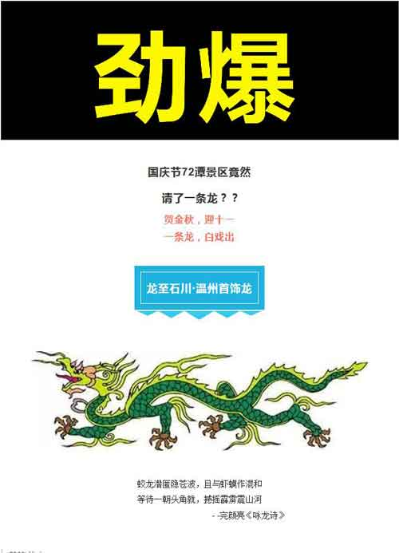
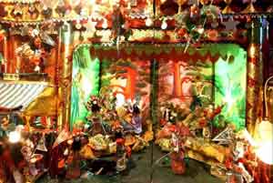
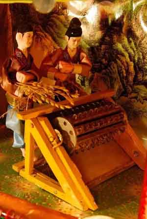

首饰龙 | 起源于明朝，已有400多年历史，乐清首饰龙不同于传统龙灯，根据渔船的结构打造，前有龙头，后有龙尾，龙身至少是由4层楼阁组成，做工考究，技法精湛，属民间工艺美术珍品。作为乐清当地的民间灯彩，首饰龙除了用来娱乐以外，还蕴含着人们对生活的美好祝愿。
浙江省温州乐清首饰龙灯是传统工艺美术珍品。起源于明朝末年，距今已有400多年历史。一般长6米，高4米，宽2.5米，前有龙头，后有龙尾，龙身至少是由4层楼阁组成的。首饰龙这一汉族民间灯彩游艺活动除了当地老百姓用来娱乐外，还蕴涵着人们的美好祝愿。乐清首饰龙也是国家非物质文化遗产之一。

通过电源，大戏开演，龙身上的花鸟、亭台、楼阁都动了起来，甚至于每个人物的手掌都能一开一合，令人惊叹。这些人物各自表演不同的动作和场景，妙趣横生。

首饰龙制作工艺繁琐，大大小小近万个零部件，每一个都是手工制作。并且要做好首饰龙，必须精通木匠、竹工、雕刻、绘画等多门手艺。此次方城龙宫的这条首饰龙耗时两年共同完成，然后又经过一千多公里的长途跋涉，终于来到方城七十二潭。